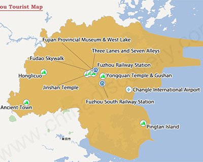

Fuzhou has one frequently used airport. It is an intenational airport namely Changle International Airport. The airport operates about 117 flight routes, connecting international cities.
Changle International Airport
Address: Zhanggang Street, Changle District, Fuzhou, Fujian, China (福州市长乐区漳港街道金湖梅线，长乐国际机场)
Useful Fuzhou Maps
To help you know better about Fuzhou City, we provide the Fuzhou Tourist Map.
